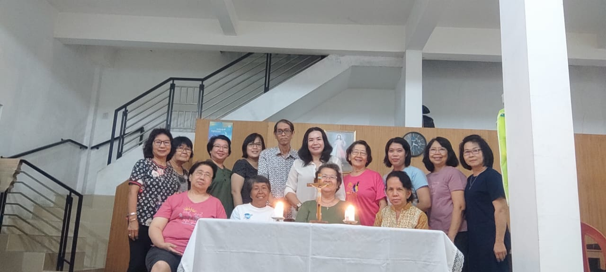

<!DOCTYPE html>
<html xmlns="http://www.w3.org/1999/xhtml" lang="en" xml:lang="en"><head>

<meta charset="utf-8">
<meta name="generator" content="quarto-1.3.353">

<meta name="viewport" content="width=device-width, initial-scale=1.0, user-scalable=yes">

<meta name="author" content="">
<meta name="dcterms.date" content="2023-09-19">

<title>Beranda - Pertemuan BKSN ke 3: Kasih Allah Menyelamatkan</title>
<style>
code{white-space: pre-wrap;}
span.smallcaps{font-variant: small-caps;}
div.columns{display: flex; gap: min(4vw, 1.5em);}
div.column{flex: auto; overflow-x: auto;}
div.hanging-indent{margin-left: 1.5em; text-indent: -1.5em;}
ul.task-list{list-style: none;}
ul.task-list li input[type="checkbox"] {
  width: 0.8em;
  margin: 0 0.8em 0.2em -1em; /* quarto-specific, see https://github.com/quarto-dev/quarto-cli/issues/4556 */ 
  vertical-align: middle;
}
</style>


<script src="../../../site_libs/quarto-nav/quarto-nav.js"></script>
<script src="../../../site_libs/quarto-nav/headroom.min.js"></script>
<script src="../../../site_libs/clipboard/clipboard.min.js"></script>
<script src="../../../site_libs/quarto-search/autocomplete.umd.js"></script>
<script src="../../../site_libs/quarto-search/fuse.min.js"></script>
<script src="../../../site_libs/quarto-search/quarto-search.js"></script>
<meta name="quarto:offset" content="../../../">
<script src="../../../site_libs/quarto-html/quarto.js"></script>
<script src="../../../site_libs/quarto-html/popper.min.js"></script>
<script src="../../../site_libs/quarto-html/tippy.umd.min.js"></script>
<script src="../../../site_libs/quarto-html/anchor.min.js"></script>
<link href="../../../site_libs/quarto-html/tippy.css" rel="stylesheet">
<link href="../../../site_libs/quarto-html/quarto-syntax-highlighting-dark.css" rel="stylesheet" id="quarto-text-highlighting-styles">
<script src="../../../site_libs/bootstrap/bootstrap.min.js"></script>
<link href="../../../site_libs/bootstrap/bootstrap-icons.css" rel="stylesheet">
<link href="../../../site_libs/bootstrap/bootstrap.min.css" rel="stylesheet" id="quarto-bootstrap" data-mode="dark">
<script id="quarto-search-options" type="application/json">{
  "location": "navbar",
  "copy-button": false,
  "collapse-after": 3,
  "panel-placement": "end",
  "type": "overlay",
  "limit": 20,
  "language": {
    "search-no-results-text": "No results",
    "search-matching-documents-text": "matching documents",
    "search-copy-link-title": "Copy link to search",
    "search-hide-matches-text": "Hide additional matches",
    "search-more-match-text": "more match in this document",
    "search-more-matches-text": "more matches in this document",
    "search-clear-button-title": "Clear",
    "search-detached-cancel-button-title": "Cancel",
    "search-submit-button-title": "Submit"
  }
}</script>


<link rel="stylesheet" href="../../../styles.css">
</head>

<body class="nav-fixed fullcontent">

<div id="quarto-search-results"></div>
  <header id="quarto-header" class="headroom fixed-top">
    <nav class="navbar navbar-expand-lg navbar-dark ">
      <div class="navbar-container container-fluid">
      <div class="navbar-brand-container">
    <a class="navbar-brand" href="../../../index.html">
    <span class="navbar-title">Beranda</span>
    </a>
  </div>
            <div id="quarto-search" class="" title="Search"></div>
          <button class="navbar-toggler" type="button" data-bs-toggle="collapse" data-bs-target="#navbarCollapse" aria-controls="navbarCollapse" aria-expanded="false" aria-label="Toggle navigation" onclick="if (window.quartoToggleHeadroom) { window.quartoToggleHeadroom(); }">
  <span class="navbar-toggler-icon"></span>
</button>
          <div class="collapse navbar-collapse" id="navbarCollapse">
            <ul class="navbar-nav navbar-nav-scroll me-auto">
  <li class="nav-item">
    <a class="nav-link" href="../../../about.html" rel="" target="">
 <span class="menu-text">Sekilas</span></a>
  </li>  
  <li class="nav-item">
    <a class="nav-link" href="https://instagram.com/lingkungan_st.andreas_pwt?igshid=MzMyNGUyNmU2YQ==" rel="" target=""><i class="bi bi-instagram" role="img">
</i> 
 <span class="menu-text">Instagram</span></a>
  </li>  
</ul>
            <div class="quarto-navbar-tools ms-auto">
</div>
          </div> <!-- /navcollapse -->
      </div> <!-- /container-fluid -->
    </nav>
</header>
<!-- content -->
<div id="quarto-content" class="quarto-container page-columns page-rows-contents page-layout-article page-navbar">
<!-- sidebar -->
<!-- margin-sidebar -->
    
<!-- main -->
<main class="content" id="quarto-document-content">

<header id="title-block-header" class="quarto-title-block default">
<div class="quarto-title">
<h1 class="title">Pertemuan BKSN ke 3: Kasih Allah Menyelamatkan</h1>
  <div class="quarto-categories">
    <div class="quarto-category">bksn</div>
    <div class="quarto-category">pendalaman iman</div>
  </div>
  </div>


<div class="quarto-title-meta">

    
    <div>
    <div class="quarto-title-meta-heading">Published</div>
    <div class="quarto-title-meta-contents">
      <p class="date">September 19, 2023</p>
    </div>
  </div>
  
    
  </div>
  

</header>

<table class="table">
<tbody>
<tr class="odd">
<td></td>
</tr>
</tbody>
</table>
<p>Setelah melewati masa-masa yang penuh tantangan, saat ini masyarakat dunia sedang berupaya untuk bangkit dari keterpurukan, kepedihan, dan krisis akibat Pandemi Covid-19. Banyak yang berhasil bangkit, tetapi tidak sedikit di antara mereka yang kemudian berhadapan dengan kenyataan pahit dan bahkan kehilangan harapan hidup. Pertemuan ketiga ini, mendalami subtema, <strong>“Kasih Allah Menyelamatkan.”</strong> Kita diajak untuk senantiasa bersyukur atas rahmat kehidupan yang telah dicurahkan oleh Allah hingga saat ini, betapapun beratnya tantangan hidup kita. Allah sendiri berjanji melalui Nabi Yoel bahwa Ia tidak akan tinggal diam, sebaliknya Ia akan memberikan apa yang dibutuhkan umat-Nya dan memulihkan hidup kita.</p>
<p>Pertemuan ketiga ini, mendalami sebuah teks singkat dari kitab Nabi Yoel, yakni Yl. 2:23-27. Dalam teks ini, Nabi Yoel meyakinkan dan menghibur umat Allah yang baru kembali dari pembuangan dengan menegaskan janji Tuhan bahwa tanah air mereka akan kembali seperti semula dan keadaan mereka akan dipulihkan. Istilah “memulihkan” memiliki arti “mengganti rugi” sebagaimana dapat kita temukan dalam Kel. 22:1. Kehancuran umat akibat invasi tentara Babel dianggap sebagai “kerugian”. Kerugian inilah yang diganti oleh Allah, kehancuran inilah yang akan dipulihkan oleh Allah. Allah memulihkan keadaan umat-Nya untuk menunjukkan “belas kasihan kepada umat-Nya” (Yl. 2:18). Allah itu “pengasih dan penyayang, panjang sabar, dan berlimpah kasih setia” (Yl. 2:13).</p>
<p><strong>Inspirasi Yoel 2:23-27</strong></p>
<p><strong>2:23</strong> Hai bani Sion, bersorak-soraklah dan bersukacitalah karena TUHAN, Allahmu! Sebab telah diberikan-Nya kepadamu hujan pada awal musim dengan adilnya, dan diturunkan-Nya bagimu hujan, hujan pada awal dan hujan pada akhir musim seperti semula.<br>
<strong>2:24</strong> Tempat-tempat pengirikan akan penuh dengan gandum, dan tempat-tempat penampungan berkelimpahan anggur dan minyak.<br>
<strong>2:25</strong> Aku akan memulihkan kepadamu tahun-tahun yang hasilnya dimakan habis oleh belalang pindahan, belalang pelompat, belalang pelahap dan belalang pengerip, pasukan-Ku yang besar yang Kukirim ke tengah-tengah kamu.<br>
<strong>2:26</strong> Kamu akan makan sepuasnya dan menjadi kenyang, dan kamu akan memuji-muji nama TUHAN, Allahmu, yang melakukan perbuatan Ajaib bagimu. Umat-Ku tidak akan mendapat malu lagi untuk selama-lamanya.<br>
<strong>2:27</strong> Kamu akan mengetahui bahwa Aku ada di antara orang Israel, dan bahwa Akulah TUHAN, Allahmu; dan tidak ada yang lain. Umat-Ku tidak akan mendapat malu lagi untuk selama-lamanya.</p>
<p><strong>Pendalaman Teks</strong></p>
<ul>
<li>Nubuat Yoel dalam 2:23-27 dibuka dengan ajakan untuk bersukacita. Alasannya adalah kehadiran Tuhan sendiri. “Bersukacitalah karena Tuhan, Allahmu!” (ay. 23). Tuhan hadir dan telah melakukan sesuatu demi kepentingan umat-Nya. Tuhan juga akan menyelamatkan mereka. Keselamatan dipahami sebagai pemulihan. Memulihkan dapat berarti mengganti rugi apa yang telah hilang atau rusak.</li>
<li>Di tengah kesulitan, kita kadang menginginkan kehidupan yang lain. Akan tetapi, Nabi Yoel mengajak kita untuk bersyukur atas kehidupan yang sudah diperoleh sampai saat ini. Melihat karya Tuhan di masa lalu membantu umat masa kini untuk memiliki harapan. Harapan terungkap dalam sebuah keyakinan bahwa Tuhan akan mengirimkan ‘hujan’. Ia akan membalikkan ‘kekeringan’ dan memberkati umat-Nya dengan kemakmuran berupa melimpahnya hasil gandum, anggur, dan minyak (ay. 24).</li>
<li>Tuhan berjanji, “Aku akan memulihkan kepadamu” (ay. 25), yang berarti bahwa Tuhan akan mengganti kerugian yang diderita umatNya. Nabi Yoel menggunakan serangan belalang untuk menggambarkan serangan pasukan musuh yang menyebabkan kehancuran Yerusalem dan penderitaan terhadap penduduknya. Kehancuran dan penderitaan inilah yang dimaksud dengan ‘kerugian’ dan akan ‘dibayar’ atau dipulihkan oleh Tuhan. Pemulihan yang dilakukan Tuhan jauh lebih besar bahkan bisa berkali-kali lipat daripada kesulitan yang telah dialami bangsa Israel. Pemulihan Tuhan membawa kemakmuran dan kehormatan bagi umat-Nya.</li>
<li>Melalui peristiwa pemulihan, Allah mengajak umat-Nya untuk mengetahui bahwa Ia ada dan hadir di tengah-tengah mereka; Ia menyertai mereka yang sedang dalam kesusahan. Bahkan, pemulihan tersebut dilakukan untuk menyatakan karakter-Nya sendiri sebagai Allah yang “pengasih dan penyayang, panjang sabar dan berlimpah kasih setia” (2:13) dan memiliki “belas kasihan kepada umat-Nya” (2:18). Karena itulah, mereka harus tahu dan sadar bahwa tidak ada Allah lain selain Dia. Hanya Tuhan-lah yang layak untuk disembah dan dipuji, bukan pemberiannya.</li>
</ul>
<p><strong>Sharing dan Aksi Nyata</strong></p>
<p>Setelah penjelasan teks, peserta diajak untuk mensharingkan pengalaman pribadi mereka dan membangun aksi nyata dengan bantuan beberapa pertanyaan :</p>
<ul>
<li><p>Ketika berhadapan dengan pengalaman terluka atau terpuruk di masa lalu, apakah saya dapat merasakan bahwa Tuhanlah yang menyelamatkan hidup saya?</p></li>
<li><p>Apakah saya bersedia mengorbankan atau meninggalkan sesuatu untuk mengikuti Yesus?</p></li>
<li><p>Apakah saya dapat melihat bahwa kemakmuran, kekayaan, jabatan, atau kedudukan yang saya peroleh merupakan pemberian Tuhan?</p></li>
</ul>
<p><em>Materi tulisan dari buku pendalaman BKSN 2023 yang disusun oleh tim Lembaga Biblika Indonesia.</em></p>
<hr>


</main> <!-- /main -->
<script id="quarto-html-after-body" type="application/javascript">
window.document.addEventListener("DOMContentLoaded", function (event) {
  const toggleBodyColorMode = (bsSheetEl) => {
    const mode = bsSheetEl.getAttribute("data-mode");
    const bodyEl = window.document.querySelector("body");
    if (mode === "dark") {
      bodyEl.classList.add("quarto-dark");
      bodyEl.classList.remove("quarto-light");
    } else {
      bodyEl.classList.add("quarto-light");
      bodyEl.classList.remove("quarto-dark");
    }
  }
  const toggleBodyColorPrimary = () => {
    const bsSheetEl = window.document.querySelector("link#quarto-bootstrap");
    if (bsSheetEl) {
      toggleBodyColorMode(bsSheetEl);
    }
  }
  toggleBodyColorPrimary();  
  const icon = "";
  const anchorJS = new window.AnchorJS();
  anchorJS.options = {
    placement: 'right',
    icon: icon
  };
  anchorJS.add('.anchored');
  const isCodeAnnotation = (el) => {
    for (const clz of el.classList) {
      if (clz.startsWith('code-annotation-')) {                     
        return true;
      }
    }
    return false;
  }
  const clipboard = new window.ClipboardJS('.code-copy-button', {
    text: function(trigger) {
      const codeEl = trigger.previousElementSibling.cloneNode(true);
      for (const childEl of codeEl.children) {
        if (isCodeAnnotation(childEl)) {
          childEl.remove();
        }
      }
      return codeEl.innerText;
    }
  });
  clipboard.on('success', function(e) {
    // button target
    const button = e.trigger;
    // don't keep focus
    button.blur();
    // flash "checked"
    button.classList.add('code-copy-button-checked');
    var currentTitle = button.getAttribute("title");
    button.setAttribute("title", "Copied!");
    let tooltip;
    if (window.bootstrap) {
      button.setAttribute("data-bs-toggle", "tooltip");
      button.setAttribute("data-bs-placement", "left");
      button.setAttribute("data-bs-title", "Copied!");
      tooltip = new bootstrap.Tooltip(button, 
        { trigger: "manual", 
          customClass: "code-copy-button-tooltip",
          offset: [0, -8]});
      tooltip.show();    
    }
    setTimeout(function() {
      if (tooltip) {
        tooltip.hide();
        button.removeAttribute("data-bs-title");
        button.removeAttribute("data-bs-toggle");
        button.removeAttribute("data-bs-placement");
      }
      button.setAttribute("title", currentTitle);
      button.classList.remove('code-copy-button-checked');
    }, 1000);
    // clear code selection
    e.clearSelection();
  });
  function tippyHover(el, contentFn) {
    const config = {
      allowHTML: true,
      content: contentFn,
      maxWidth: 500,
      delay: 100,
      arrow: false,
      appendTo: function(el) {
          return el.parentElement;
      },
      interactive: true,
      interactiveBorder: 10,
      theme: 'quarto',
      placement: 'bottom-start'
    };
    window.tippy(el, config); 
  }
  const noterefs = window.document.querySelectorAll('a[role="doc-noteref"]');
  for (var i=0; i<noterefs.length; i++) {
    const ref = noterefs[i];
    tippyHover(ref, function() {
      // use id or data attribute instead here
      let href = ref.getAttribute('data-footnote-href') || ref.getAttribute('href');
      try { href = new URL(href).hash; } catch {}
      const id = href.replace(/^#\/?/, "");
      const note = window.document.getElementById(id);
      return note.innerHTML;
    });
  }
      let selectedAnnoteEl;
      const selectorForAnnotation = ( cell, annotation) => {
        let cellAttr = 'data-code-cell="' + cell + '"';
        let lineAttr = 'data-code-annotation="' +  annotation + '"';
        const selector = 'span[' + cellAttr + '][' + lineAttr + ']';
        return selector;
      }
      const selectCodeLines = (annoteEl) => {
        const doc = window.document;
        const targetCell = annoteEl.getAttribute("data-target-cell");
        const targetAnnotation = annoteEl.getAttribute("data-target-annotation");
        const annoteSpan = window.document.querySelector(selectorForAnnotation(targetCell, targetAnnotation));
        const lines = annoteSpan.getAttribute("data-code-lines").split(",");
        const lineIds = lines.map((line) => {
          return targetCell + "-" + line;
        })
        let top = null;
        let height = null;
        let parent = null;
        if (lineIds.length > 0) {
            //compute the position of the single el (top and bottom and make a div)
            const el = window.document.getElementById(lineIds[0]);
            top = el.offsetTop;
            height = el.offsetHeight;
            parent = el.parentElement.parentElement;
          if (lineIds.length > 1) {
            const lastEl = window.document.getElementById(lineIds[lineIds.length - 1]);
            const bottom = lastEl.offsetTop + lastEl.offsetHeight;
            height = bottom - top;
          }
          if (top !== null && height !== null && parent !== null) {
            // cook up a div (if necessary) and position it 
            let div = window.document.getElementById("code-annotation-line-highlight");
            if (div === null) {
              div = window.document.createElement("div");
              div.setAttribute("id", "code-annotation-line-highlight");
              div.style.position = 'absolute';
              parent.appendChild(div);
            }
            div.style.top = top - 2 + "px";
            div.style.height = height + 4 + "px";
            let gutterDiv = window.document.getElementById("code-annotation-line-highlight-gutter");
            if (gutterDiv === null) {
              gutterDiv = window.document.createElement("div");
              gutterDiv.setAttribute("id", "code-annotation-line-highlight-gutter");
              gutterDiv.style.position = 'absolute';
              const codeCell = window.document.getElementById(targetCell);
              const gutter = codeCell.querySelector('.code-annotation-gutter');
              gutter.appendChild(gutterDiv);
            }
            gutterDiv.style.top = top - 2 + "px";
            gutterDiv.style.height = height + 4 + "px";
          }
          selectedAnnoteEl = annoteEl;
        }
      };
      const unselectCodeLines = () => {
        const elementsIds = ["code-annotation-line-highlight", "code-annotation-line-highlight-gutter"];
        elementsIds.forEach((elId) => {
          const div = window.document.getElementById(elId);
          if (div) {
            div.remove();
          }
        });
        selectedAnnoteEl = undefined;
      };
      // Attach click handler to the DT
      const annoteDls = window.document.querySelectorAll('dt[data-target-cell]');
      for (const annoteDlNode of annoteDls) {
        annoteDlNode.addEventListener('click', (event) => {
          const clickedEl = event.target;
          if (clickedEl !== selectedAnnoteEl) {
            unselectCodeLines();
            const activeEl = window.document.querySelector('dt[data-target-cell].code-annotation-active');
            if (activeEl) {
              activeEl.classList.remove('code-annotation-active');
            }
            selectCodeLines(clickedEl);
            clickedEl.classList.add('code-annotation-active');
          } else {
            // Unselect the line
            unselectCodeLines();
            clickedEl.classList.remove('code-annotation-active');
          }
        });
      }
  const findCites = (el) => {
    const parentEl = el.parentElement;
    if (parentEl) {
      const cites = parentEl.dataset.cites;
      if (cites) {
        return {
          el,
          cites: cites.split(' ')
        };
      } else {
        return findCites(el.parentElement)
      }
    } else {
      return undefined;
    }
  };
  var bibliorefs = window.document.querySelectorAll('a[role="doc-biblioref"]');
  for (var i=0; i<bibliorefs.length; i++) {
    const ref = bibliorefs[i];
    const citeInfo = findCites(ref);
    if (citeInfo) {
      tippyHover(citeInfo.el, function() {
        var popup = window.document.createElement('div');
        citeInfo.cites.forEach(function(cite) {
          var citeDiv = window.document.createElement('div');
          citeDiv.classList.add('hanging-indent');
          citeDiv.classList.add('csl-entry');
          var biblioDiv = window.document.getElementById('ref-' + cite);
          if (biblioDiv) {
            citeDiv.innerHTML = biblioDiv.innerHTML;
          }
          popup.appendChild(citeDiv);
        });
        return popup.innerHTML;
      });
    }
  }
});
</script>
</div> <!-- /content -->


</body></html>